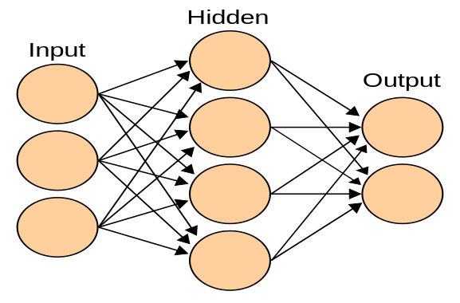
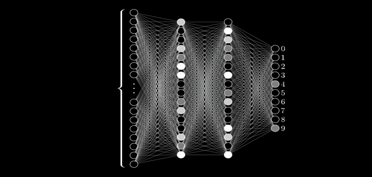
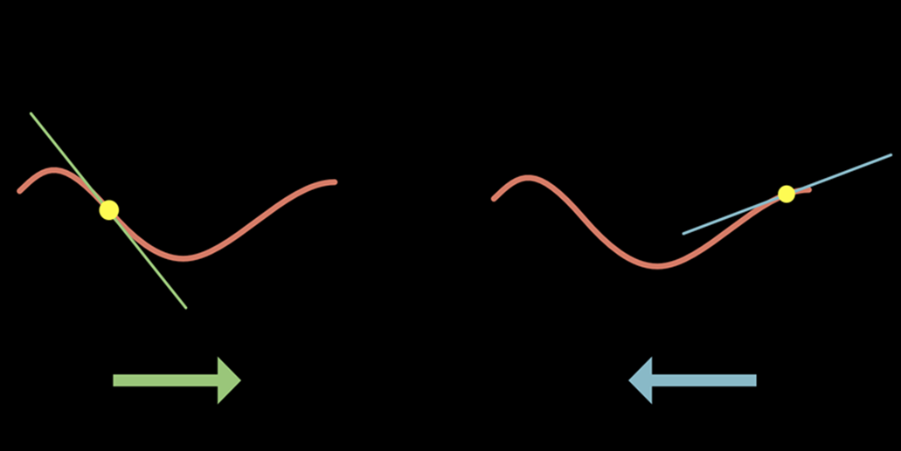

Introduction to Neural Networks, Machine Learning and ANN Model
A neural network is a type of artificial intelligence that mimics the human brain, combined with computer science and statistics to solve common problems in AI. Neural networks, commonly referred to as artificial neural networks (ANN) or simulated neural networks (SNN), are a subset of machine learning that form the basis for deep learning techniques. Machine learning is a branch of artificial intelligence focused on building machines that can learn from data and improve performance without explicit training. Machine learning algorithms can be divided into two broad categories: supervised learning and unsupervised learning. Supervised learning refers to algorithms that are given a set of input strategies and learn to suggest new strategies for desired results. Unsupervised learning happens when an algorithm is given a set of non-text inputs and learns to find patterns or patterns in the data. Neural networks are composed of layers of nodes, or artificial neurons, that are connected by weights, or synapses. Each node receives inputs from the previous layer, multiplies them by the weights, adds a bias term, and passes them through an activation function that determines the output of the node. The output of one node becomes the input of another node in the next layer. The first layer is referred to as the input layer, the last layer as the output layer, and any layers in between as hidden layers.

The structure of the neural network is inspired by the neural networks that make up the human brain. There are about 100 billion neurons in the human brain that communicate with each other through synapses. Neurons can fire or activate when they receive enough signals from other neurons. The brain can store and process information in a distributed and balanced way, which makes it very powerful and flexible. Neural networks are modeled after the brain, and they are composed of a set of interconnected nodes, or neurons. It is made up of a network of linked units or nodes known as artificial neurons, which are loosely modelled after neurons in the biological brain. Each nerve receives signals from other neurons, processes them, and sends signals to other neurons. The signal is real and the processing is done by some nonlinear operation of the numbers of its components. Connections between neurons have weights that can be adjusted during learning and change the strength of the signal.
Neural networks can learn from data by adjusting their weights and biases through a process called training. The training should feed the network with a set of inputs and compare the results with the expected results. The difference between the actual output and the expected output is called the error or loss. The aim of the training is to adjust the weight and reduce the deflection using an optimization method ( eg. gradient descent. see fig1, fig2).
The network can use its learned weights and biases to make predictions for new ideas. Neural networks are used in machine learning for classification, regression, clustering, dimensional reduction, generative modelling, reinforcement learning, natural language processing, computer vision, speech recognition, etc. can be used for many tasks. Neural networks can handle complex and high-dimensional datasets that traditional algorithms deal with. Neural networks can also learn discrete and abstract features from data that are not easily captured by simple rules or equations. Neural networks are a type of artificial intelligence that tries to emulate the human brain and solve common problems in machine learning. Neural networks are composed of layers of nodes that are connected by weights and learn from data by adjusting their weights through training. Neural networks can be used for various tasks in machine learning, such as classification, regression, clustering, etc., but they also have some limitations and challenges that need to be addressed.